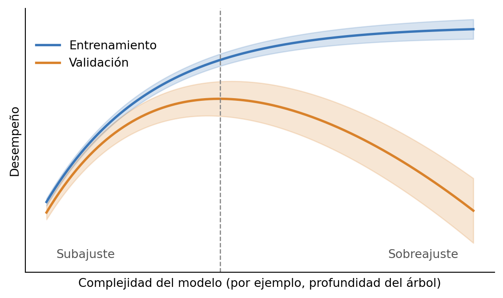
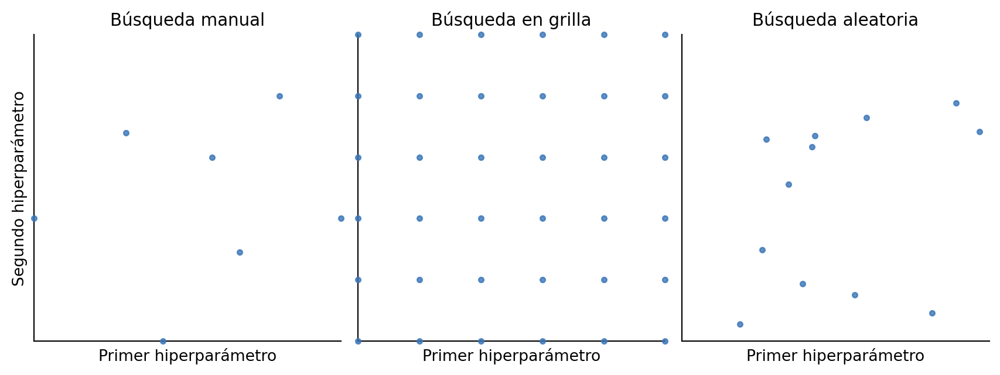
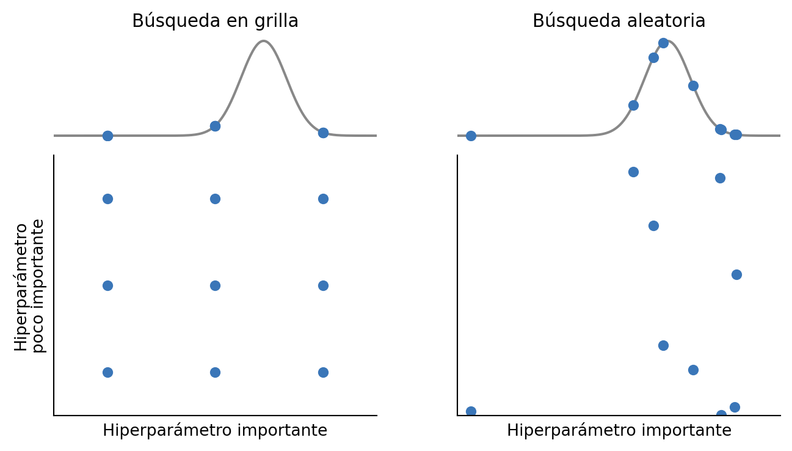

8 Optimización de hiperparámetros
En el Capítulo 4 distinguimos entre los parámetros de un modelo, que se ajustan automáticamente durante el entrenamiento —por ejemplo, la ordenada al origen y la pendiente de una regresión lineal—, y los hiperparámetros, que elegimos antes de entrenar —por ejemplo, la profundidad de un árbol de decisión, el nivel de regularización o la cantidad de árboles de un ensamble—. Mientras que los parámetros definen cómo el modelo transforma los atributos en una predicción, los hiperparámetros determinan su estructura, en un sentido amplio: cuán flexible puede ser. Por ejemplo, una regresión lineal regularizada tiene la misma cantidad de parámetros que una sin regularizar, pero es menos flexible (Capítulo 5). Coloquialmente es común llamar parámetros a ambos, pero conviene tener claro qué rol cumple cada uno.
Retomando los tres niveles que distinguimos en ese capítulo: los hiperparámetros forman parte de la configuración, mientras que los parámetros son los del modelo entrenado. Optimizar hiperparámetros es, entonces, elegir la mejor configuración dentro de una familia de modelos. Si bien no siempre mantuvimos esa terminología, y muchas veces usamos modelo para todo, en este capítulo conviene retomarla.
Elegir hiperparámetros es, a su vez, un problema de optimización: buscamos la configuración que minimice una métrica de error, como el MSE o el MAE, o que maximice una métrica de desempeño, como la exactitud o el área bajo la curva ROC (AUC-ROC). Pero esa métrica no se puede evaluar sobre el conjunto de entrenamiento: ahí siempre gana la configuración más flexible, porque puede ajustarse cada vez mejor a los datos que ya vio. Lo que nos interesa es el desempeño en datos nuevos, así que la métrica se estima con validación cruzada sobre el conjunto de desarrollo, siguiendo el protocolo del Capítulo 4.
Esto es particularmente importante al comparar familias de modelos distintas sobre un mismo conjunto de datos: no sería justo comparar una familia A con su mejor configuración contra una familia B con los valores por defecto.
Las familias de modelos suelen tener muchos hiperparámetros. No todos tienen la misma importancia, y es común optimizar solamente los más importantes, dejando el resto en sus valores por defecto. En general, a medida que usamos cada familia desarrollamos una intuición de cuáles son los que predominan.
Una herramienta para estudiar el efecto de un hiperparámetro es la curva de validación (Figura 8.1). En el eje horizontal va el hiperparámetro, ordenado según la complejidad del modelo que produce. En el caso de los árboles, la complejidad está directamente asociada a su profundidad: un árbol poco profundo es simple, y se vuelve más complejo a medida que aumenta la profundidad. En el eje vertical va el desempeño, tanto en entrenamiento como en validación.
Esta curva está idealizada, pero rescata los aspectos más importantes. Las configuraciones simples tienen un desempeño bajo, tanto en entrenamiento como en validación: no alcanzan a captar los patrones de los datos, lo que se conoce como subajuste. Las complejas, en cambio, tienen un desempeño muy alto en entrenamiento, pero peor en validación. Esa gran distancia entre ambos es una señal del sobreajuste. La mejor configuración está en el medio, donde el desempeño en validación es máximo. Las bandas recuerdan que cada punto de la curva es un promedio sobre los folds de la validación cruzada: si dos complejidades tienen desempeños parecidos y sus bandas se superponen, es difícil afirmar que una sea mejor que la otra (Capítulo 4).
Esta herramienta, sin embargo, no sirve cuando tenemos muchos hiperparámetros. Hacer una curva de validación para cada uno informa sobre el efecto de cada uno individualmente, pero podría haber interacciones entre ellos que no estemos rescatando. Optimizar un conjunto de hiperparámetros es distinto de optimizar cada uno por separado: el mejor valor de uno puede depender del valor de los otros. Por ejemplo, en el boosting, la mejor cantidad de árboles depende de la tasa de aprendizaje (Capítulo 7). En las secciones siguientes vamos a ver tres estrategias (Figura 8.2):
- Búsqueda manual.
- Búsqueda en grilla (grid search).
- Búsqueda aleatoria (random search).

8.1 Búsqueda manual
En la búsqueda manual, elegimos los valores de algunos hiperparámetros según nuestro criterio o experiencia previa, entrenamos el modelo, estimamos su desempeño con validación cruzada y, según el resultado, probamos otros valores. Por ejemplo:
- Tenemos una familia de modelos con un hiperparámetro \(a\).
- Decidimos probar los valores \(a = 1\) y \(a = 2\).
- Estimamos el desempeño de cada configuración.
- Nos quedamos con el valor de mejor desempeño, por ejemplo, en exactitud.
Repetir este ciclo hasta obtener un desempeño satisfactorio suele ser tedioso y poco eficiente. Pero la búsqueda manual tiene una ventaja: es muy útil para ganar intuición sobre el comportamiento del modelo. Por eso, es común probar algunos valores a mano antes de pasar a algo más metódico.
8.2 Búsqueda en grilla
La siguiente idea es probar con todas las combinaciones posibles. Elegimos los hiperparámetros que queremos explorar y, para cada uno, un conjunto de valores posibles. Luego armamos una grilla con todas las combinaciones y estimamos el desempeño en cada una. Esto se conoce como búsqueda en grilla (grid search). Por ejemplo:
- Tenemos una familia de modelos con dos hiperparámetros, \(a\) y \(b\).
- Elegimos sus posibles valores: \(a \in \{1, 3\}\) y \(b \in \{2, 4\}\).
- Armamos las cuatro combinaciones posibles y estimamos el desempeño en cada una.
- Nos quedamos con la de mejor desempeño, por ejemplo, \(a = 3\) y \(b = 2\) (Figura 8.3).
La búsqueda en grilla tiene un problema serio: su costo computacional crece muy rápido. En el ejemplo, dos hiperparámetros con dos valores cada uno dan cuatro combinaciones, pero esa situación es poco realista. Con cinco hiperparámetros y diez valores para cada uno, la grilla tiene \(10^5 = 100\,000\) combinaciones, y cada configuración requiere entrenar \(k\) modelos, uno por cada fold de la validación cruzada. Por eso, antes de una búsqueda en grilla se suele hacer una búsqueda manual, para acotar los hiperparámetros a optimizar y sus valores posibles. Sumado a la experiencia y al conocimiento del problema, esto reduce mucho la cantidad de combinaciones.
8.3 Búsqueda aleatoria
¿Qué podemos hacer si tenemos muchos hiperparámetros y nos cuesta acotarlos? Una muy buena opción es la búsqueda aleatoria (random search). En lugar de armar una grilla, definimos un rango para cada hiperparámetro y sorteamos combinaciones al azar dentro de esos rangos. La cantidad de combinaciones la elegimos nosotros, según el tiempo de cómputo disponible. Por ejemplo:
- Tenemos una familia de modelos con dos hiperparámetros, \(a\) y \(b\).
- Definimos sus rangos, respetando el tipo de cada uno: por ejemplo, \(a\) entero entre 1 y 5, y \(b\) entero entre 5 y 10.
- Sorteamos algunas combinaciones, por ejemplo, \((2, 6)\), \((3, 5)\) y \((5, 5)\), y estimamos el desempeño en cada una.
- Nos quedamos con la de mejor desempeño.
La búsqueda aleatoria puede parecer una mala idea frente a la búsqueda en grilla, pero en la mayoría de los casos funciona mejor (Bergstra y Bengio 2012). La razón combina dos hechos. Primero, con la misma cantidad de combinaciones, la búsqueda aleatoria prueba más valores distintos de cada hiperparámetro: en una grilla de \(3 \times 3\), cada hiperparámetro toma solo tres valores, mientras que nueve combinaciones al azar dan nueve valores distintos de cada uno. Segundo, en general, unos pocos hiperparámetros son mucho más importantes que el resto: la variación en el desempeño está dominada por ellos. Juntando las dos cosas, la búsqueda aleatoria explora mejor los hiperparámetros que importan (Figura 8.4).

8.4 Evaluación al optimizar hiperparámetros
Al optimizar hiperparámetros, aplicamos el protocolo del Capítulo 4 a gran escala: cada configuración que probamos se evalúa con validación cruzada sobre el conjunto de desarrollo, y elegimos la de mejor desempeño. Con cientos o miles de configuraciones, es muy probable que alguna tenga buen desempeño en la validación cruzada simplemente por azar, sin que generalice mejor que las demás. Por eso, el desempeño en validación cruzada de la configuración elegida es una estimación optimista: la elegimos, justamente, porque le fue bien en esos datos. Es en estas circunstancias en las que este optimismo debido a la selección está más presente.
Para obtener una estimación que no esté afectada por la selección, necesitamos datos que no hayan intervenido ni en el entrenamiento ni en la selección: el conjunto de prueba, que reservamos al principio y usamos una sola vez. Con la configuración elegida entrenamos un modelo sobre todo el conjunto de desarrollo, y es ese modelo entrenado el que evaluamos en prueba. Notar que la prueba no garantiza que la configuración elegida sea la mejor; lo que nos da es una estimación de su desempeño que no está inflada por haberla elegido.
Una última observación: la optimización de hiperparámetros es una etapa importante, pero no conviene obsesionarse con ella. Suele ser relativamente sencillo obtener una mejora apreciable en un ciclo de trabajo corto, pero, pasado ese punto, cada mejora adicional es costosa. Muchas veces, ese esfuerzo rinde más si se invierte en entender mejor el problema, construir mejores atributos u obtener nuevos datos. Además, cuantas más configuraciones probamos, mayor es el riesgo de quedarnos con una que solo tuvo suerte.